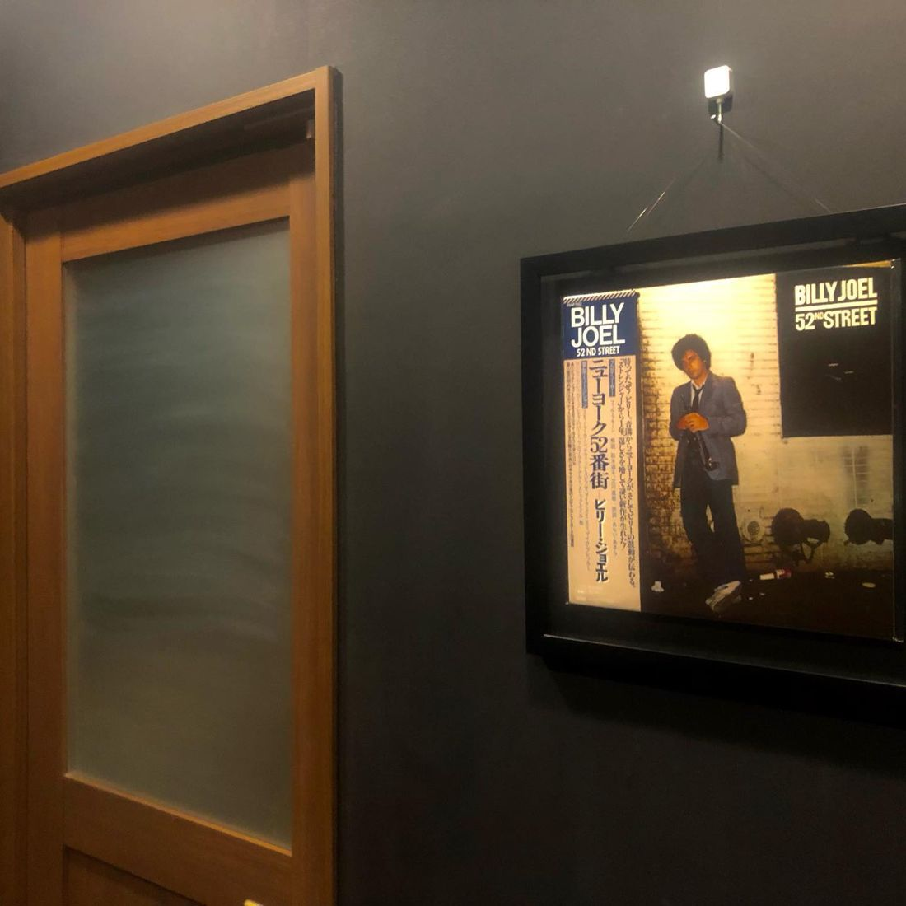
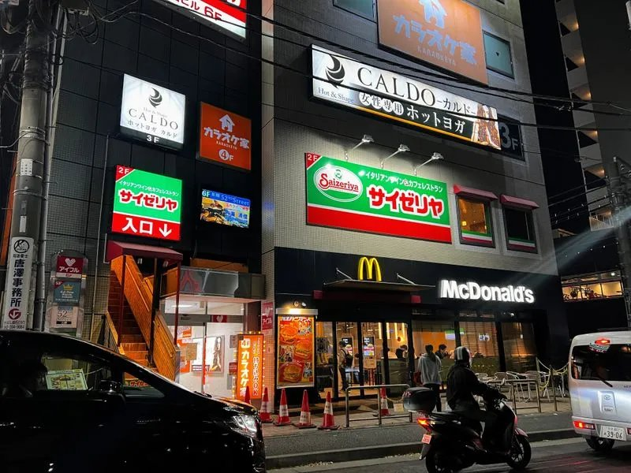

About us
店舗について

Origin of the Name
「52番街」店名の由来
ニューヨーク・マンハッタン52丁目、通称「52nd Street」。かつてはバードランドをはじめ、ビッグバンドを抱える多くのジャズクラブが軒を連ねたジャズの中心地でした。
ジャズとアコースティックピアノをこよなく愛する店主が高校生のとき、ビリー・ジョエルのアルバムで最初に手にしたのが「ニューヨーク52番街」でした。
40余年、音楽と演奏に支えられてきた人生への感謝とともに。これから活躍する若いミュージシャンの試練の場として、そしてグランドピアノのジャズを聴きながら旨い酒を傾けられる店として、大好きなピアノマンと愛するジャズに敬意を表し、店の名を「52番街」としました。
店主 敬白


| 店舗名 | 会員制ダイニングバー 52番街 Live & Exclusive Dining Bar 52nd Street |
|---|---|
| スタジオ名 | ライブ＆レコーディング スタジオ 52 LIVE & RECORDING STUDIO 52 |
| 来店受付 | 19:00〜21:00（事前予約を除く） |
| 営業時間 | 19:00〜23:30（L.O. 22:40） |
| ジャズ生演奏 | 19:30／20:00／20:30／21:00／21:30／22:00／22:30（全7ステージ） |
| 客席数 | 通常営業時：カウンター5席・テーブル41席 ライブ・イベント時：51席（テーブル着席）〜92席程度 |
| 収容人員 | 245名（スタンディング）／98名（シッティング） 消防法施行規則第1条の3による定員 |
| 営業開始 | 2021年10月4日 |
| 資格者 | 食品衛生責任者／第一種防火安全技術者／甲種防火管理者／防災管理者／デジタル簡易無線局／第二級陸上特殊無線技士 |
※ ライブ・イベント開催時は、時間が公演ごとに変わります。
Access
アクセス
| 所在地 | 東京都東村山市栄町2-2-7 TMビル 6F |
|---|---|
| 最寄駅 | 西武新宿線 久米川駅 南口 徒歩30秒 |
| 駐車場 | ［なし・近隣コインパーキング：要確認］ |

Company
運営会社
| 運営会社 | 株式会社コムネックス・ジャパン フードサービス事業部 店舗統括部｜042-313-0855 |
|---|---|
| グループ会社 | 日向坂スタジオ合同会社（音響スタジオ・撮影収録・フードサービス） シックスフォージェドリック株式会社（フィットネスジム） |